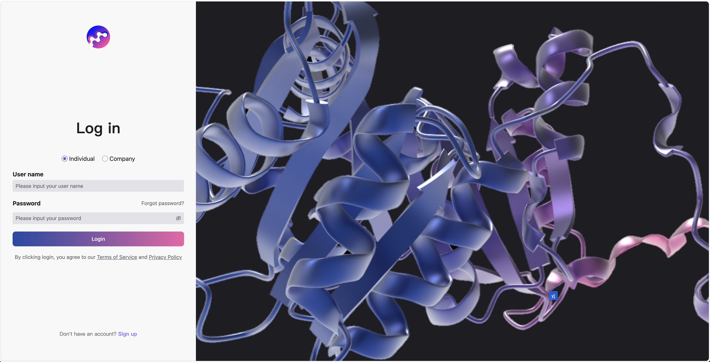

MoleculeMind Raises Over $100 Million as Investors Rally Behind AI-Powered Biology as 'New Industrial Infrastructure'
MoleculeMind, an AI-driven protein design platform, has closed a Series A financing totaling over $100 million, Leiphone has reported. The round saw participation from Blue Bridge Capital, Pudong Venture Capital, COFCO Emerging Industry Fund, Oriental Fortune Capital, Fosun Venture Capital, Guofang Venture Capital, Sepax Technologies, Infinity Group, Caixin Capital, and Zhengding, among others. Returning backers Cathay Biotech and Chip Capital also added to their positions. The breadth of the investor base underscores a rare alignment among financial institutions, industrial capital, and strategic guiding funds behind MoleculeMind's vision.
At a moment when capital markets demand unflinching 'certainty' and AI for Science (AI4S) moves into deeper terrain, this financing delivers an unambiguous signal: global competition in AI-driven protein engineering has migrated from laboratory model benchmarks to an industrial-grade contest centered on solving real-world problems and closing commercial loops. In this realignment, MoleculeMind is cementing its position as a rare infrastructure-defining player—armed with frontier underlying technology, verifiable industrial outcomes, and an uncommon cross-sector capital consensus.
The Technology Moat: From Observation to Creation — A World-Class Scientist Drives AI Protein's Second Paradigm Shift
For decades, both drug discovery and industrial enzyme engineering have amounted to a luck-driven 'blind-box screening' exercise. Confronted with candidate molecule libraries numbering in the hundreds of millions, pharmaceutical companies routinely commit decade-long timelines and billion-dollar budgets to screening and validation.
'AI-powered drug development's next phase must break free from random trial and error,' argued Professor Xu Jinbo, founder of MoleculeMind.
Professor Xu Jinbo—creator of RaptorX-Contact, the world's first effective AI protein structure prediction algorithm—is widely regarded as a founding figure of AI protein folding. Having steered the first paradigm shift in structure prediction, he is now spearheading a second transformation: shifting biomacromolecule R&D from random trial and error into the deterministic era of programmable bioengineering.
While most industry players remain fixated on structure prediction, MoleculeMind has advanced into the industrial validation phase of de novo design, producing a demonstrable track record of creation against real clinical targets.
MoleculeMind recently unveiled MMDesign, an AI-powered de novo biologics design platform that delivered potentially transformative industrial value. In trials spanning 12 real clinical targets, it posted a hit rate above 90% and overcame GPCR, TNFα, and other targets long considered industry 'hard problems.'

More consequential is the exponential leap in R&D cost and efficiency. Conventional methods demand screening of hundreds of millions of candidates to yield a single antibody; MMDesign requires wet-lab validation of just 14 to 50 AI-generated candidates to produce high-affinity, high-expression novel nanobodies. For the notoriously difficult TNFα target, antibody affinity reached picomolar levels.
This high hit rate is underpinned by MMFold, MoleculeMind's proprietary high-precision structure prediction foundation model. In the authoritative FoldBench benchmark, MMFold surpassed all open-source models on highly complex antibody-antigen interfaces and delivered a tier-dominant lead over Google AlphaFold 3 and other leading models in high-precision prediction. The result marks the first time a Chinese team has completed the pivot from catching up to leading in AI protein's most industrially valuable core track.
Fortifying the Moat: A Proprietary AI 'Operating System' for Biomacromolecules, Reshaping Biological Infrastructure Through Programmable Bioengineering
A single technological breakthrough is rarely sufficient to sustain large-scale industrial deployment. MoleculeMind's defensible advantage lies in having moved beyond a one-off algorithmic tool to construct an AI-native bioengineering infrastructure: MoleculeOS (MOS, URL: https://mos.moleculemind.com/).

MOS is anchored on NewOrigin (Darwin), MoleculeMind's proprietary multimodal protein foundation model, which fuses AI with first-principles physics to power an engineering flywheel: AI-driven precision design, small-sample wet-lab validation, and continuous model and platform evolution.
Powered by MOS, MoleculeMind has logged consecutive wins in high-barrier industrial scenarios where conventional wet-lab approaches and general-purpose AI have fallen short—all confirmed by wet-lab validation:
In the demanding realm of novel drug development, the platform solved a pH-sensitive antibody design challenge in just two months—one that traditional high-throughput screening had failed to crack—delivering a 60-fold affinity differential across pH conditions. For a pipeline suffering from critically low expression, it raised expression levels by over 400-fold with monomer purity exceeding 90%, effectively reviving a highly valuable commercial asset.
In green biomanufacturing, the company partnered with industry collaborators to conduct directed evolution of super industrial enzymes, boosting strain yields several-fold and unlocking material headroom for cost reduction and efficiency gains at commercial scale.
The MOS platform has been validated through live projects with strategic tier-1 partners spanning innovative pharmaceuticals, food, and advanced chemical materials. Its client roster includes multinational pharmaceutical companies among the world's largest by market capitalization, premier US biomedical venture firms, China's top-tier innovative drug developers, leading domestic synthetic biology players, publicly listed food companies, and global chemical materials groups. Multiple partners proactively initiated follow-on engagements after the first project; several have formed sustained multi-project relationships. Collaboration scope has broadened from individual projects to multiple targets, diverse molecular formats, and varied application domains. These facts underscore that MoleculeMind's AI protein design platform commands strong customer stickiness, cross-sector applicability, and durable value-creation capability—positioning it as a foundational R&D platform with robust foundations and considerable upside in the life sciences.
Concurrently, these real industrial projects—each rigorously vetted through wet-lab validation—are steadily accumulating into a reservoir of high-quality proprietary closed-loop data, which in turn reinforces the MOS platform. This data flywheel, powered by genuine industrial deployment, builds a moat the industry will find hard to breach and confers upon MoleculeMind a distinctive engineering edge in the global AI protein race.

Capital Convergence: Cross-Sector Heavyweights Place Their Bets as AI4S Shifts to an Infrastructure Contest
Global innovative drug development has reached a critical cross-cycle inflection point, with capital and industrial resources converging rapidly on core 'hard infrastructure.' The industry's requirements for AI have moved decisively beyond research-grade structure prediction to demand end-to-end engineering solutions spanning the full design-validation-production chain. Only platforms that combine underlying technology, engineering capability, and an industrial closed loop are positioned to scale in this environment.
Its cross-sector foundational platform characteristics, coupled with proven customer retention, position MoleculeMind as a scarce target for concentrated capital and industry backing.
Huang Bohao, founder of Blue Bridge Capital, commented: 'MoleculeMind is among the handful of teams globally that possesses genuine foundational originality in AI protein science. Professor Xu Jinbo's academic standing is irreplaceable, but what distinguishes them is their ability to convert technical prowess into verifiable commercial milestones. This capacity to close the loop from scientific breakthrough to industrial delivery is exceptionally rare in AI-driven drug development.'
Chen Huawei, a partner at Oriental Fortune Capital, stated: 'AI4S ranks among the most structurally certain technology revolutions of the coming decade. MoleculeMind not only commands a world-class protein foundation model but has also built a demonstrably billable and verifiable capability in high-frequency pharma use cases—including antigen-antibody complex prediction and conditionally activated protein design.'
The investment lead at COFCO Emerging Industry Fund noted: 'Biomanufacturing is a strategically prioritized future industry at the national level. MoleculeMind has made substantial AI inroads across industrial enzyme design, biomaterial optimization, and food product innovation, and is already exhibiting commercial promise. COFCO Emerging Industry Fund will continue to support MoleculeMind's rollout in biomanufacturing by harnessing the scenario and data advantages of our portfolio companies in the biology domain, jointly advancing China's bioeconomy toward AI-driven leadership.'
Huang Xueying, chairman of Sepax Technologies, highlighted the mutual synergies: 'Chromatographic purification and protein engineering form a tightly coupled, critical node in the biologics value chain. MoleculeMind's leadership in AI protein design and engineering aligns closely with Sepax Technologies' separation and purification expertise, scaled manufacturing capabilities, and industrial network. We anticipate a joint lift in the overall efficiency of innovative biologics R&D and manufacturing.'
Dr. Yang Chen, President of Cathay Biotech and a continuing investor, stated: 'MoleculeMind's AI protein engineering capabilities have been rigorously validated through our joint industrial work. From directed evolution of industrial enzymes to marked strain yield improvements, the team has produced concrete proof of AI's substantial value in biomanufacturing. As a long-standing backer, we are adding to our position precisely because we see both the certainty of the AI-plus-biomanufacturing thesis and the MoleculeMind team's rare ability to convert technology into industrial efficiency.'
MoleculeMind has established a multi-tiered business model spanning platform licensing, collaborative R&D, and proprietary pipeline development. On the licensing front, MOS has been opened to top-tier pharmaceutical companies, embedding AI-driven precision design and small-scale wet-lab validation directly into partners' R&D processes. In the collaborative R&D track, the company and its industry partners continue to produce industrial-grade outputs against difficult targets and complex protein engineering challenges. On the proprietary pipeline side, MoleculeMind has accumulated several early-stage assets with First-in-Class promise.
Professor Xu Jinbo concluded: 'The foundational technological revolution in AI-driven protein science has passed theoretical validation. The shift from laboratory to industrial-scale application is now underway—translating silicon-bound computational power into tangible material value.'